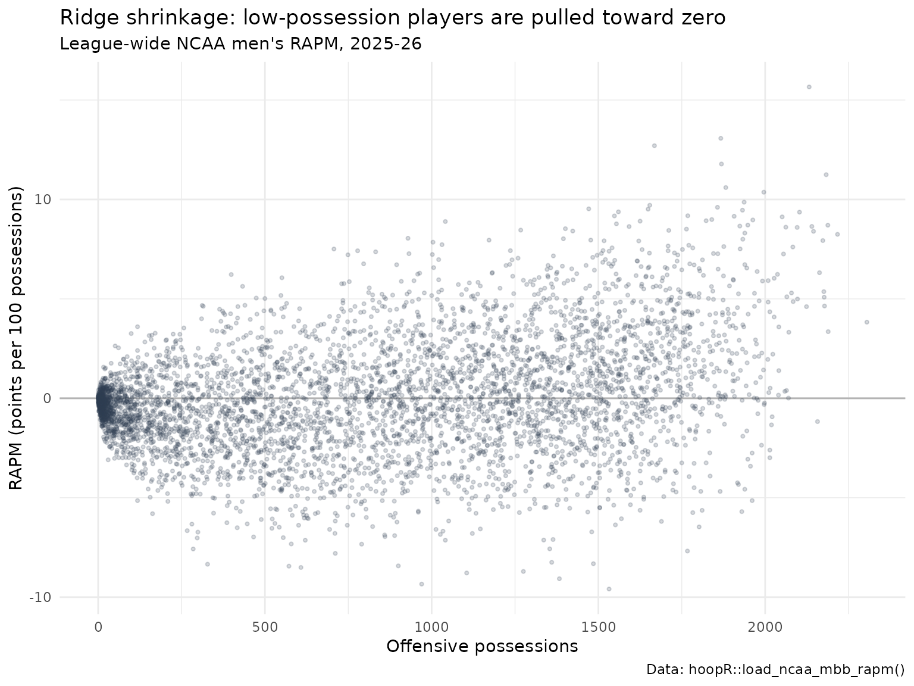
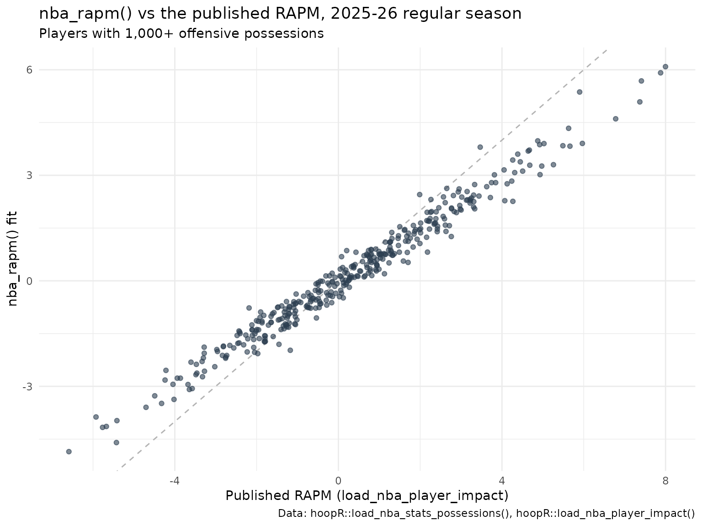

College Basketball RAPM Model: Regularized Adjusted Plus-Minus for NCAA Men's Players
Saiem Gilani
Source:vignettes/articles/college-basketball-rapm-model.Rmd
college-basketball-rapm-model.RmdRegularized adjusted plus-minus (RAPM) asks one question of
every possession: given the ten players on the floor, how many points
did it produce, and how much of that belongs to each player?
Solve that jointly over a whole season and each player’s coefficient is
his estimated effect on a possession, controlling for every teammate and
opponent he shared the floor with. hoopR serves two college
RAPM datasets built this way, load_ncaa_mbb_rapm()
(league-wide) and load_ncaa_mbb_rapm_within_team()
(within-team), and its nba_rapm() function lets you fit the
same kind of model yourself. This article explains all three.
The official model card for the college ratings is rapm.md
in the ncaa-mbb-hoops-data repository. Numbers below are
either computed in this article from the published releases or quoted
from the card and labeled “as reported in the model card”.
Plus-minus, APM and RAPM
- Plus-minus is a team’s point differential while a player is on the floor. It is easy to compute and badly confounded: a bench player who always plays beside an All-American looks great.
- Adjusted plus-minus (APM) fixes the confounding with a regression. Each row is a possession (or a stint of possessions), each player gets an indicator column, and the outcome is points scored. The coefficients separate each player’s contribution from his teammates’ and opponents’.
- Regularized APM (RAPM) adds a ridge penalty. Plain APM is wildly unstable because players who share the floor are nearly collinear and many have few possessions. The ridge penalty shrinks every coefficient toward zero, more strongly the less data a player has, trading a little bias for a large drop in variance.
Two estimands, never merged
| League-wide RAPM | Within-team RAPM | |
|---|---|---|
| Loader | load_ncaa_mbb_rapm() |
load_ncaa_mbb_rapm_within_team() |
| Fit | One ridge regression over all Division I possessions of a season | One fit per team, over that team’s own possessions |
| Scale | Points per 100 possessions, comparable across teams | Apportions one team’s performance across its players; not comparable across teams |
| Columns |
orapm, drapm, rapm_net,
off_poss, def_poss, estimand
|
rapm_off, rapm_def, rapm_net,
team_off_poss, num_players
|
| Coverage | Seasons 2011 to 2026 | See the reference page |
Every league-wide row carries estimand = "league" so the
two cannot be silently mixed.
How is the league-wide model fit?
As described in the model card:
-
Design. Each row is a possession. Each player has a
column that is +1 when he is on offense and -1 when he is on defense,
plus an intercept (the league’s points per 100 possessions) and a
home-court term. Offensive and defensive components are estimated
jointly;
rapm_net = orapm + drapm. - Penalty. Ridge regression with lambda = 1000, fixed by a validation program and asserted at run time, so a fit that silently ran unregularized cannot be published.
- Inputs. Possessions compiled by the SportsDataverse NCAA play-by-play engine from stats.ncaa.org, team rosters, and a name-change table that keeps a player in one column across transfers and spelling variants. Season 2010 fails the usable-possession gate and is excluded.
- Feature engineering lives in the possessions. Substitution windows, possession trimming, and free-throw and end-of-period edge cases are handled when possessions are built, not in the regression.
What do the inputs look like?
The possession and stint frames the model is built from are published too. Each possession row lists both teams’ five players, points, and flags such as garbage time:
library(hoopR)
library(dplyr)
library(ggplot2)
season <- 2026
poss <- load_ncaa_mbb_possessions(seasons = season)
stints <- load_ncaa_mbb_matchup_stints(seasons = season)
tibble(
possessions = nrow(poss),
games = n_distinct(poss$contest_id),
points_per_100 = round(100 * mean(poss$pts, na.rm = TRUE), 1),
garbage_time_share = round(mean(poss$is_garbage_time == 1, na.rm = TRUE), 3),
n_stints = nrow(stints),
median_stint_possessions = median(stints$n_possessions, na.rm = TRUE)
)
#> # A tibble: 1 × 6
#> possessions games points_per_100 garbage_time_share n_stints
#> <int> <int> <dbl> <dbl> <int>
#> 1 878168 6291 108. 0.034 210508
#> # ℹ 1 more variable: median_stint_possessions <dbl>A stint is a stretch during which the same ten players are on the floor. Stints are short, which is exactly why RAPM needs a full season and a penalty.
What does the league-wide rating look like?
rapm <- load_ncaa_mbb_rapm(seasons = season)
rapm |>
summarise(
players = n(),
median_off_poss = median(off_poss),
mean_rapm_net = round(mean(rapm_net), 3),
sd_rapm_net = round(sd(rapm_net), 2)
)
#> # A tibble: 1 × 4
#> players median_off_poss mean_rapm_net sd_rapm_net
#> <int> <dbl> <dbl> <dbl>
#> 1 4974 758. 0 2.78Shrinkage is visible directly: players with few possessions sit near zero because the data cannot separate them from their lineups, and the spread widens as possessions accumulate.
ggplot(rapm, aes(off_poss, rapm_net)) +
geom_hline(yintercept = 0, colour = "grey70") +
geom_point(alpha = 0.2, size = 0.8, colour = "#2C3D50") +
labs(
title = "Ridge shrinkage: low-possession players are pulled toward zero",
subtitle = "League-wide NCAA men's RAPM, 2025-26",
x = "Offensive possessions", y = "RAPM (points per 100 possessions)",
caption = "Data: hoopR::load_ncaa_mbb_rapm()"
) +
theme_minimal()
The leaders, with a possession floor so the list is not dominated by noise:
rapm |>
filter(off_poss >= 800) |>
arrange(desc(rapm_net)) |>
select(player, team, off_poss, orapm, drapm, rapm_net) |>
mutate(across(orapm:rapm_net, \(x) round(x, 2))) |>
head(15)
#> # A tibble: 15 × 6
#> player team off_poss orapm drapm rapm_net
#> <chr> <chr> <int> <dbl> <dbl> <dbl>
#> 1 YAXEL.LENDEBORG Michigan 2132 8.7 6.96 15.7
#> 2 FLORY.BIDUNGA Kansas 1867 5.1 7.97 13.1
#> 3 HENRI.VEESAAR North Carolina 1668 6.24 6.47 12.7
#> 4 MJ.COLLINS Utah St. 1869 6.84 4.94 11.8
#> 5 JAKOBI.GILLESPIE Tennessee 2183 9.17 2.08 11.2
#> 6 FLETCHER.LOYER Purdue 1882 5.96 4.64 10.6
#> 7 KEATON.WAGLER Illinois 1996 7.65 2.71 10.4
#> 8 JEREMY.FEARS Michigan St. 1937 4.21 5.65 9.86
#> 9 ROBBIE.AVILA Saint Louis 1654 6.02 3.68 9.71
#> 10 JOSHUA.JEFFERSON Iowa St. 1857 5.8 3.81 9.6
#> 11 DAME.SARR Duke 1471 3.22 6.31 9.53
#> 12 IZAIYAH.NELSON South Fla. 1649 4.23 5.28 9.51
#> 13 MILAN.MOMCILOVIC Iowa St. 1932 3.79 5.67 9.46
#> 14 TREY.MCKENNEY Michigan 1560 4.25 5.12 9.38
#> 15 CAMERON.BOOZER Duke 2103 6.46 2.9 9.36Standard errors
The model card documents ridge posterior standard errors in
orapm_se, drapm_se and
rapm_net_se, so rapm_net ± 2 * rapm_net_se
gives a deliberately cautious band. The asset
load_ncaa_mbb_rapm(2026) returned when this article was
built does not include these columns yet, so check names() on what you
load. As reported in the model card, the posterior SE is about 4 points
per 100 for high-possession players and about 5 for the
lowest-possession players, and a split-half test shows it is
conservative by roughly 2.5 times relative to how much an estimate moves
between two halves of a season. At the top of the leaderboard the bands
overlap almost entirely: treat it as a tier, not a ranking.
Within-team versus league-wide
The within-team fit answers a different question, so the two should agree only partly:
within <- load_ncaa_mbb_rapm_within_team(seasons = season)
both <- rapm |>
select(player_id, player, team, off_poss, rapm_net) |>
inner_join(within |> select(player_id, rapm_net_within = rapm_net), by = "player_id") |>
filter(off_poss >= 500)
c(players = nrow(both), r = round(cor(both$rapm_net, both$rapm_net_within), 3))
#> players r
#> 3026.00 0.83How well does it validate?
RAPM has no ground truth to score against, so validation checks that the fit is on the right scale and that it aggregates to sensible team strengths.
As reported in the model card, every season 2011-2026 passes publish-blocking gates: at least 65% of possessions usable (observed minimum 0.7414); an intercept between 95 and 112 points per 100 (observed 99.24 to 107.97); a home-court term between 1 and 4 points; and a Spearman correlation between a possession-weighted team aggregate and Bart Torvik’s adjusted efficiency margin of 0.943 to 0.978 by season. The intercept and home-court bands catch scale bugs that a rank correlation cannot see.
We can run a similar team-level check here against the
SportsDataverse’s own opponent-adjusted team ratings
(load_mbb_ratings(), explained in the team ratings
article). Each team’s possession-weighted mean of player RAPM is a
rough proxy for team strength; the possession file maps NCAA team names
to ESPN team ids:
ratings <- load_mbb_ratings(seasons = season)
if (nrow(ratings) > 0) {
team_map <- poss |>
distinct(team = poss_team, team_id = as.character(poss_team_espn_team_id)) |>
filter(!is.na(team_id))
proxy <- rapm |>
group_by(team) |>
summarise(team_rapm = weighted.mean(rapm_net, off_poss + def_poss), .groups = "drop") |>
inner_join(team_map, by = "team") |>
inner_join(ratings |> transmute(team_id = as.character(team_id), adj_em), by = "team_id")
c(teams = nrow(proxy),
spearman = round(cor(proxy$team_rapm, proxy$adj_em, method = "spearman"), 3))
}
#> teams spearman
#> 365.00 0.98This proxy is not the model card’s gate statistic, and the reference ratings are a different model, so treat it as a sanity check rather than a validation result. It validates team-level aggregation, not the ordering of individual players.
Fit your own RAPM in R with nba_rapm()
hoopR also ships an in-package RAPM fitter,
nba_rapm(), that works on any possession frame with
off_player_1 to off_player_5,
def_player_1 to def_player_5 and
points. Its design, read directly from the code:
- Design matrix: for P players, 2P sparse indicator columns. Column j is 1 when player j is on offense; column P + j is 1 when he is on defense. Possessions with any missing lineup slot are dropped.
-
Model: ridge regression (
glmnet,alpha = 0) with an unpenalized intercept, which absorbs the league-average points per possession. The penalty is chosen by 10-fold cross-validation atlambda.min, with deterministic folds (every tenth possession), so results are reproducible without a seed. -
Output:
o_rapmis the offensive coefficient times 100,d_rapmis minus the defensive coefficient times 100 (so good defense is positive),rapm = o_rapm + d_rapm, plus possession counts.
The SportsDataverse’s NBA possession frame,
load_nba_stats_possessions(), has exactly those columns, so
a full NBA regular season fits offline in seconds. (Note this loader
takes the season’s start year; game_ids
starting with 002 are regular-season games.)
nba_rapm() needs the glmnet and
Matrix packages.
nba_poss <- load_nba_stats_possessions(seasons = 2025) |>
filter(substr(game_id, 1, 3) == "002")
c(possessions = nrow(nba_poss), games = n_distinct(nba_poss$game_id))
#> possessions games
#> 245646 1230
fit_time <- system.time(my_rapm <- nba_rapm(nba_poss))
round(fit_time[["elapsed"]], 1)
#> [1] 11.8
my_rapm |>
summarise(players = n(),
wmean_o_rapm = weighted.mean(o_rapm, off_poss),
wmean_d_rapm = weighted.mean(d_rapm, def_poss)) |>
mutate(across(-players, \(x) round(x, 2)))
#> # A tibble: 1 × 3
#> players wmean_o_rapm wmean_d_rapm
#> <int> <dbl> <dbl>
#> 1 582 0.3 0.07Two properties of this design show up immediately:
-
Values are relative to average. The intercept
carries the roughly one point per possession that every possession
scores, and on this season the possession-weighted means of
o_rapmandd_rapmare within a few tenths of zero. The data cannot tell either block’s overall level from the intercept, so the penalty settles it: the plain average over players is exactly zero. The possession-weighted average is not guaranteed to be. (Before hoopR 3.2.0nba_rapm()had no intercept, and that average leaked into the players:o_rapmsat about 10 points above zero andd_rapmabout 10 below.) -
Low-minute players are shrunk toward zero. The
ridge penalizes every player’s raw coefficient equally (no
standardization, as in sportsdataverse-py), and
lambda.minis chosen for predicting possession outcomes. A player with a few dozen possessions has little data to move the estimate off zero, so the value says little either way. Use a possession floor when ranking.
Compare with the published suite’s RAPM for the same season:
published <- load_nba_player_impact(seasons = 2026) |>
filter(season_type == "Regular Season") |>
select(player_id, player_name, rapm_published = rapm)
compare <- my_rapm |>
inner_join(published, by = "player_id")
compare |>
mutate(floor = if_else(off_poss >= 1000, "1,000+ possessions", "under 1,000")) |>
group_by(floor) |>
summarise(players = n(), r_with_published = round(cor(rapm, rapm_published), 3))
#> # A tibble: 2 × 3
#> floor players r_with_published
#> <chr> <int> <dbl>
#> 1 1,000+ possessions 384 0.986
#> 2 under 1,000 198 0.992
compare |>
filter(off_poss >= 1000) |>
ggplot(aes(rapm_published, rapm)) +
geom_abline(colour = "grey70", linetype = "dashed") +
geom_point(alpha = 0.6, colour = "#2C3D50") +
labs(
title = "nba_rapm() vs the published RAPM, 2025-26 regular season",
subtitle = "Players with 1,000+ offensive possessions",
x = "Published RAPM (load_nba_player_impact)", y = "nba_rapm() fit",
caption = "Data: hoopR::load_nba_stats_possessions(), hoopR::load_nba_player_impact()"
) +
theme_minimal()
The two agree closely for regulars. To control the penalty yourself,
build the design and call glmnet::glmnet() with your own
lambda.
For a single game you can build the possession frame from live NBA
Stats play-by-play with nba_possession_lineups(). It calls
stats.nba.com, so it is not run here, and one game (about 200
possessions) is far too few for a meaningful RAPM:
one_game <- nba_possession_lineups(game_id = "0022200001")
nba_rapm(one_game) # pipeline illustration onlyThe same approach works for college:
load_ncaa_mbb_possessions() lists the ten players by
stats.ncaa.org player id (home_1_player_id …
away_5_player_id) with pts and
poss_team, which you can reshape into offense/defense
columns.
Limitations
- Retrodictive, not predictive. RAPM describes what happened on the floor. As reported in the model card, single-season college RAPM predicts next season’s RAPM for returning players only modestly (Spearman about 0.31 for the single-season baseline).
- Collinearity. Players who always share the floor are separated only by the prior.
- Low-possession shrinkage. Low-minute players are pulled toward zero; a near-zero RAPM can mean “average” or “unknown”.
- Not luck-adjusted. Opponent three-point shooting luck is not removed from the target yet.
-
Within-team is not cross-team. Do not compare
load_ncaa_mbb_rapm_within_team()values between teams. -
Names and ids. League-wide
playerisLAST.FIRST; join onplayer_id(stats.ncaa.org) orperson_id(stable across seasons and teams).
Where to go next
- NBA player impact model: RAPM with SPM priors, BPM, DARKO-style projections and WAR.
- College basketball player value model: the box-score counterpart to RAPM.
- College basketball team ratings model and win probability model.
- Basketball advanced metrics for possessions and ratings.
- Reference: the NCAA
engine loaders and
nba_rapm().